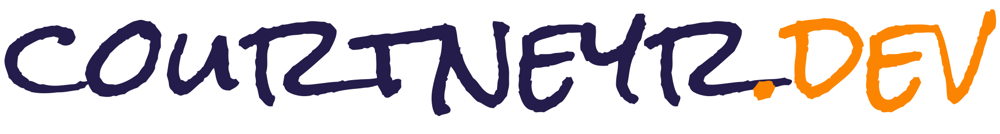

📰
courtneyr.dev · Design System v1.1
Warm, teacher-ish, shape-layered.
A brand system for Courtney Robertson — Senior Open Source Developer Advocate, WordPress educator, IndieWeb contributor. This page is the canonical reference: tokens, components, and patterns rendered from the same CSS that powers the site.
Wordmark
Rock Salt, lowercase, all-in-one. Primary brand signature.

Hero
✦ Open source · WordPress · DevRel
teaching the open web
Courtney Robertson — Senior Developer Advocate at GoDaddy, WordPress contributor, co-founder of WP Community Collective.
🏴☠️
★
Teaching WP since
2014 · Learn.wp
2 plugins on .org
Color — core palette
Russian Violet#241c4a
Ut Orange#fb8500
Sky Blue#8ecae6
Cream#fdfaf4
Support
Periwinkle#bcb5e3
Glaucous#647baf
Blue-Green#219ebc
Cerulean#126782
Prussian Blue#023047
Selective Yellow#ffb703
Light Orange#fee2c3
Typography — three-font system
Rock Salt for display, Barlow for body, Roboto Slab for accents. All three loaded via Ollie's font library on courtneyr.dev.
Display · Rock Salt
open source
Accent · Roboto Slab ExtraBold
Developer relations, teaching, and the open web.
Body · Barlow
A personal website is a promise to your future self. The web remembers who we are when we take the trouble to write things down.
Meta · Barlow Semibold uppercase
Filed under · WordPress · IndieWeb · April 15
Buttons & chips
Blog
Link
Video
Quote
Aside
Speaking
Stream — aggregate feed
The hybrid homepage feature. Post Formats, IndieWeb Post Kinds, videos, podcast, and speaking all flow into one chronological river.
🔗
Great read on XFN and the IndieWeb revival
📹
This Week in WordPress 347: Evan
🔖
“A personal website is a promise to your future self.”
🗯️